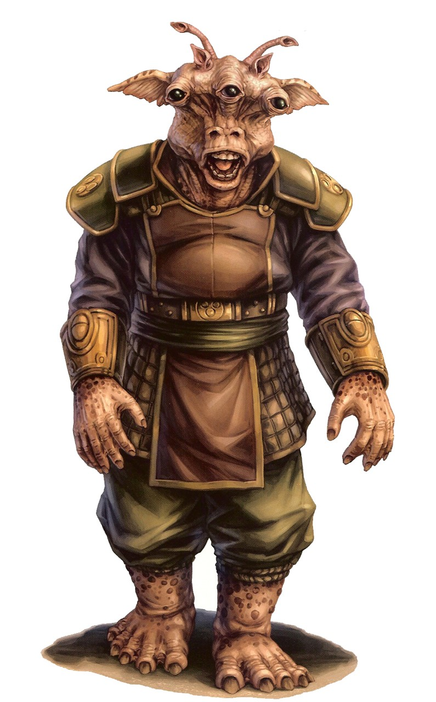

Gran
Special Abilities: Gran begin the game with one rank in Charm or Negotiation. They still may not train Charm or Negotiation above rank 2 in character creation.
Enhanced Vision: When making ranged combat or Perception checks, Gran remove up to ■ ■ imposed due to environmental conditions or concealment (but not defense).
The humanoid, three-eyed Gran are a familiar sight throughout the galaxy. Frequenting trade routes and spaceports, traveling in groups as merchants or tourists, the Gran seem to be everywhere. While they can hold their own if forced to fight, these self-proclaimed pacifists are natural talkers. Whether Gran are friendly and open or cunning and manipulative, they boast well-honed social skills. They have a knack for learning information that their source does not mean to give. At some point, most travelers have been the victim of a Gran's friendly barrage of questioning.
The Gran have a strong community spirit and work cooperatively for the good of all. They have evolved from peaceful herbivores; on their homeworld of Kinyen they were once the hunted rather than hunter, living in large groups for protection. However, the Gran have adapted since they took to the stars, sometimes even becoming hunters themselves, taking work as hired guns or bounty hunters.
There are colonies of Gran in many different sectors, as the species has dispersed throughout the galaxy quickly and enthusiastically. The most significant of their colonies are those on Hok and Malastare, where the local Gran regard themselves as natives. The Gran of these colonies have developed different social codes and practices to those still on Kinyen, who consider them only genetically similar. Colonies of Gran away from their homeworld are unlikely to remain a microcosm of Kinyen for long, even if they begin that way.
The Gran have a keen sense of sight and can see beyond the spectrum of most sighted species, including infrared. They can also detect minute physiological changes among their own kind that reveal emotions. Gran have two stomachs and digest food slowly, allowing them to go without eating for days if need be.
As a species, Gran are socialists and staunch pacifists, but not all individual Gran practice what their society preaches. Gran have a strong sense of community, and on Kinyen they raise their children for specific careers in order to benefit the community as a whole. This means that while the Gran are not unintelligent, their education can be somewhat limited. The Gran once lived in herds, relying on their numbers for safety. Now, Gran depend on their kin emotionally and hate solitude. In fact, loneliness can drive them insane, often criminally so.The harshest punishment for a Gran is exile, since having to leave his family and friends forever is a fate worse than death.
While most Gran accept the practicalities of their educational system, there are always exceptions.The occasional Gran may find the structure too rigid, and want to leave the planet to do something other than the role assigned to him.
The Gran homeworld of Kinyen is in the Expansion Region. It is located on the Corellian Trade Spine, which is one reason the Gran have spread so far through the galaxy. Many Gran still live in the colorful cities of their homeworld, which delight their keen sense of sight. The planet boasts lush forests as well as large plains of goatgrass, a favorite food of the Gran.
For some Gran, Malastare is their homeworld and their origins on Kinyen merely history. A center of trade and podracing, this high-gravity planet owes its diversity to the influx of species, sentient and otherwise, arriving via the Hydian Way.
All Gran speak Gran and almost certainly Basic, since they love to talk to everyone. When necessary, Gran learn the languages of other species too, rather than miss any chances of conversation.
While not as prevalent as humans, Gran are almost as versatile. Their abilitytoadapt and make homesand lives for themselves wherever they end up makes them successful colonists. Gran who travel the stars by choice, and many of them do, often do very well for themselves. Their amiable natures allow them to live easily alongside other species, and their positive outlook can make even the most barren of rocks seem like home. Some Gran even travel alone, but are only content to do so as long as they meet plenty of other sentient beings along the way.
Gran from Kinyen, who are generally peaceful, fight when necessary to protect themselves. On the fringe, where their lives and circumstances are very different, violent Gran are not uncommon. Some Gran do not travel by choice, but exile compels them to do so. These mutants and criminals of their homeworld often turn to drink or spice to forget their troubles, and to crime to fund these vices.
Although the Gran species originated on Kinyen, there are now many Gran who think of Malastare as their homeworld. Their history is quite different, and more turbulent, than that of their relatives on Kinyen.
Once Malastare became part of the Hydian Way, it became a key planet for trading and attracted many visitors, including some Gran colonists. For these Gran, Malastare was a bustling and lucrative planet where they could make a living and meet many spacefaring species without even leaving their new home. However, until their arrival, the sole sentient native species of Malastare had been the Dugs. The Dugs did not take kindly to what they saw as an invasion. Unfortunately for them, the Gran settlers had the support of the Republic, while the Dugs did not. War ensued, from which the Gran emerged thevictors.
Eventually the Gran population on Malastare exceeded that of the Dugs, who became subservient to their conquerors. The principles of Gran on Kinyen meant they could not approve of the apparent slavery of the Dugs, or the war that had been necessary for the colonists. They consider the Gran of Malastare to be almost a different species.